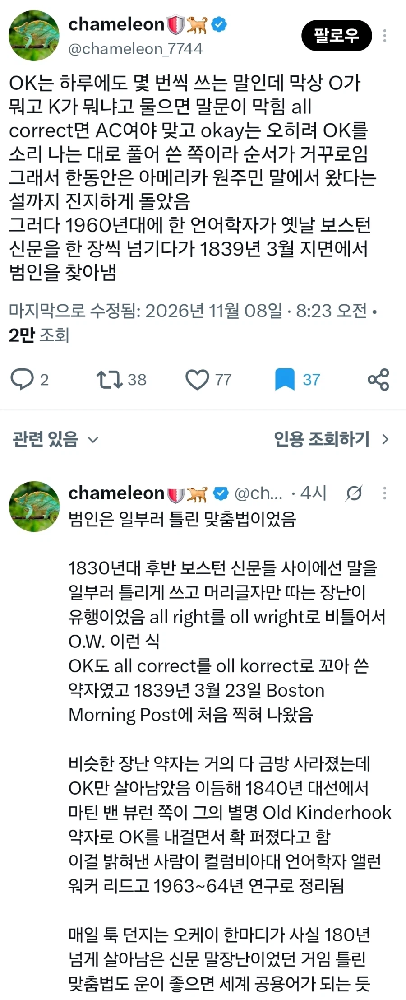
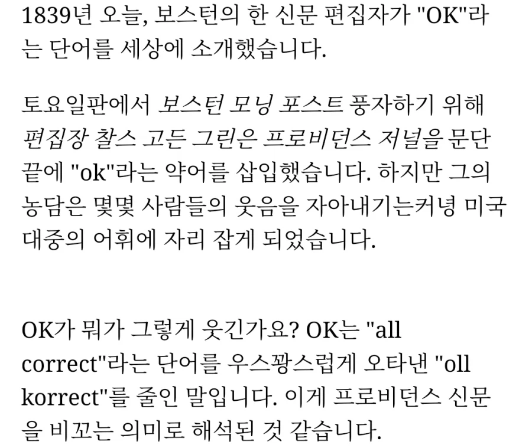
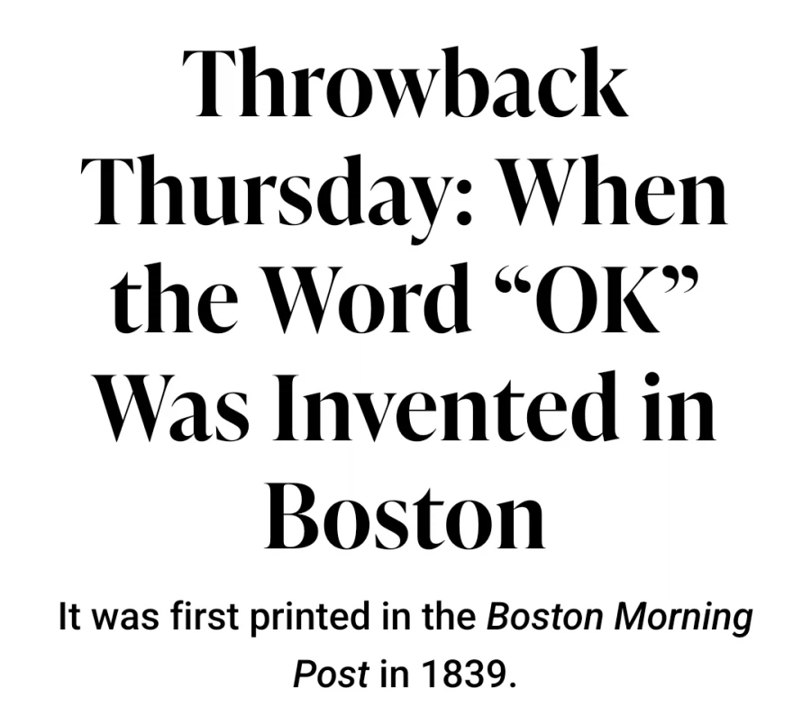

아이고 정신사나워;;;;
Ok가 야민정음이었다고?
Ok민정음
Yaglish
ㅇㅋ
오키도키 줄인건줄 알앗는데
저거 만들어낸 사람 겁나 불쌍하다
인류 역사상 최고의 개쩌는 밈을 창시했는데
만들어놓고도 역사에서 잊혀져버렸네
OK가 먼저고 Okay가 나중이라고? 헐
닭볶음탕이 옳게된 세계라니 ㄷㄷ
ㅇㅋ
음케이
오씨 가 될뻔
세계에서 가장 많이 아는 영어표현이 야민정음 ㅋㅋㅋ
심지어 일부러 한글자씩 틀리는 외국식 야민정음만해도
미국서 유행을 했음
어케 아냐고?
가우르 구라 방송에서 배움ㅎ
오키도키
ㅇㅇㅋ
셐슼ㅋㅋㅋㅋㅋㅋ
goodbye도 유명하죠이젠
원시고대야민정음 ㄷㄷㄷ
문법나찌들 이런건 괜찮나
goob bye도 실제 단어가 아니라 약어라고 들었음
원래는 god be with ye(you) = 신께서 함께하길 이라는 헤어질 때 하는 말인데
줄여서 god bwye -> god을 good으로 바꿔서
good bye 로 정착됨
ok랑 bye의 유래를 알게 된 이후로는
한국어 파괴 어쩌고 하는 거 그냥 그러려니 하게 됨
걍 시대 흐름이다 하고
신박하네
야민정음도 수십년 지나면 공식될듯
댕댕이같은거
어게이
에이씨.. (all correct)
오케이~